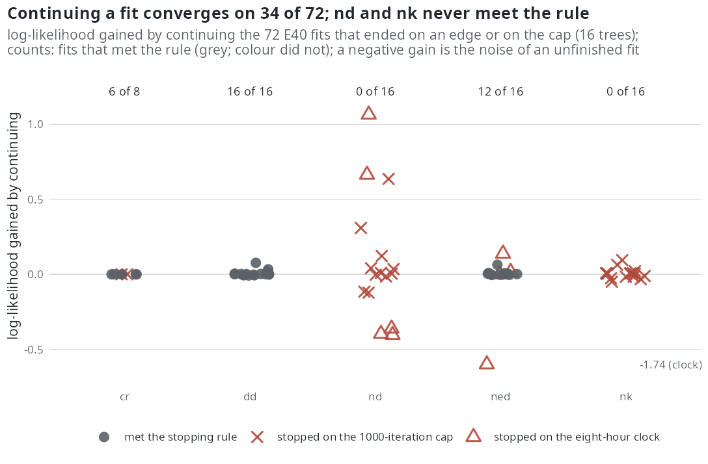
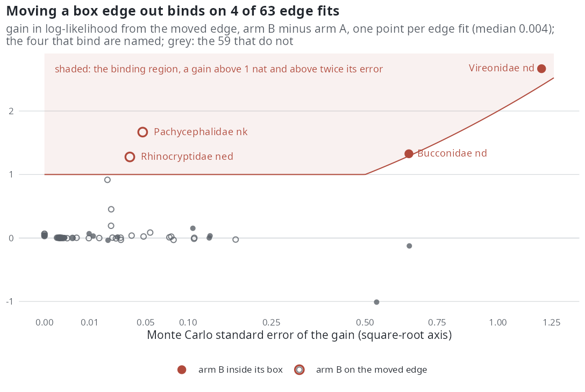

E41 — E40's fits run to convergence, and their box edges moved out
| Status | closed at the pilot (16 trees, 135 of 135 jobs, 2026-10-19; amendment of the same date). Neither rule triggers: the parsimonious choice is unchanged on 16 of 16 trees and the edge binds on 4 of 63 edge fits; zero extinction excluded on 0 of 16 trees. The 154 trees beyond the pilot are not run |
| Package build | f30a791 |
| Driver / analysis | sim/E41-followup.R / sim/E41-analysis.R |
| Data | results/E41/exact-cr.csv, results/E41/jobs.csv (one row per job), pairs.csv (one row per edge pair), rerank.csv, summary.txt in the repository; the per-job .csv and .trace.rds outside the repository (results/E41/jobs/) |
Question
E40's interim report (16 trees) found 25 of 80 fits on the 300-iteration cap, every nd fit among them, and 128 of 384 parameter trajectories ending on a box edge, almost all lower edges of the extinction intercept and of the extinction slope on \(N\). Two questions follow for every such fit: does it change its answer when allowed to finish, and is the edge holding it, that is, would the likelihood rise if the box were wider? And one for every tree: does the tree exclude zero extinction at all?
Design
For every E40 fit that ended on its iteration cap or with a parameter on a box edge (results/E40/report/edges.csv):
| arm | what is run |
|---|---|
| A, run on | the fit continued from its estimate in the same box: the edge bound at the value the fit returned to, the other bounds from auto_bounds() recomputed with the estimate kept inside; the mc_error rule (draws grown x1.5 when a step is within its Monte Carlo error, up to 2400); at most 1000 iterations; an eight-hour clock |
| B, edge moved out | edge fits only: as arm A with every edge bound moved out, an intercept by 4 log units, a slope to three times its distance from zero |
| exact reference | per tree, DDD::bd_ML (constant rates, crown conditioned, the missing species from \(\rho\)), free and with \(\mu = 0\); \(\mathrm{LR}(0) = 2(\hat\ell - \ell_0)\) |
The pilot: 16 trees, 135 jobs (72 arm A, 63 arm B), 3 workers (results/E41.log). The 154 trees beyond the pilot were not run (closed at the pilot by the amendment of 2026-10-19; see Conclusion).
Pre-set rule
- Convergence. The share of arm-A fits that meet the rule within 1000 iterations, by model. If re-ranking each tree with the arm-A log-likelihoods changes the parsimonious choice on more than 10% of trees, E40's choices are read only with the continuation.
- The bound. Per edge fit, \(\Delta = \hat\ell_B - \hat\ell_A\) with standard error \(\sqrt{v_A + v_B}\) from the fits' log-likelihood variances; the edge is binding if \(\Delta > 1\) and \(\Delta > 2\) standard errors. If edges bind on at least 20% of edge fits,
auto_bounds()is too narrow for these trees: its box is widened in the package and E40 is refitted. Otherwise the likelihood is flat across the edge, and a parameter on an edge is reported as not bounded by the tree in that direction and its value is not read. Recorded beside it: whether arm B's estimate ends on the new edge. - The exact profile. The share of trees whose constant-rate likelihood excludes zero extinction (\(\mathrm{LR}(0) > 3.84\)).
Results (pilot, 16 trees, complete)
Rule 1, convergence. Arm A meets the stopping rule within 1000 iterations on 34 of 72 fits (47%): dd 16 of 16, ned 12 of 16, cr 6 of 8, nd 0 of 16, nk 0 of 16. The 25 fits that E40 had left on its 300-iteration cap split the same way: the 4 dd converge, the 16 nd and 5 nk do not (nd: 11 on the 1000-iteration cap, 5 on the eight-hour clock; nk: 16 on the cap). Continuing changes the log-likelihood by a median 0.000 to 0.007 per model (largest gain 1.07, an nd fit; nd's fits also lose up to 0.4, the Monte Carlo noise of fits that do not converge). The models that converge end with a median ESS of about 2400 of 2400 draws; nd ends at 123 and nk at 272. Re-ranking each tree with the arm-A log-likelihoods changes the parsimonious choice on 0 of 16 trees (the rule reproduces E40's recorded choice on 16 of 16), far from the 10% that would make E40 readable only with the continuation.

cr, dd and ned converge and gain nothing; nd and nk never meet the rule and scatter by their Monte Carlo noise.Rule 2, the bound. Of the 63 edge pairs, the edge binds (gain above 1 nat and above two standard errors) on 4 (6%), against the 20% that would widen the package's box: Vireonidae nd (gain 2.67, se 1.20), Pachycephalidae nk (1.67, se 0.05), Bucconidae nd (1.33, se 0.65) and Rhinocryptidae ned (1.28, se 0.04). In three of the four an arm did not converge (both nd pairs stopped on the clock and the cap; the nk pair on both caps), so their gain is the difference of two unfinished fits. The gain is a median 0.004 (quartiles 0.001 and 0.039), within 1 nat in absolute value on 58 of 63 and negative on 15. Arm B ends on its new edge on 37 of 63: the extinction slopes follow the edge wherever it is put. By parameter (arm B's value over the old edge, median): \(\gamma_N\) 47 pairs, all lower edges, ratio 3.00; \(\gamma_{ED}\) 16, 3.00; \(\gamma_K\) 11, 3.00; \(\gamma_0\) 47, 1.52 (moved out by 4 log units, the intercept moves part of the way); \(\beta_N\) 2, 1.36; \(\gamma_D\) 2 (upper edges), 1.89; \(\beta_0\) 3, 1.00 (stays).
| model | pairs | binding | gain, median | gain, max | arm B on its new edge |
|---|---|---|---|---|---|
cr |
8 | 0 | 0.045 | 0.066 | 4 |
dd |
15 | 0 | 0.004 | 0.068 | 3 |
nd |
9 | 2 | -0.024 | 2.667 | 4 |
ned |
16 | 1 | 0.003 | 1.277 | 15 |
nk |
15 | 1 | 0.015 | 1.668 | 11 |

Rule 3, the exact profile. Zero extinction is excluded (\(\mathrm{LR}(0) > 3.84\)) on 0 of 16 trees. On 15 the exact cr estimate of \(\mu\) is zero to machine precision and \(\mathrm{LR}(0)\) below \(10^{-7}\); the exception is mamm-039-Dipodidae (\(\hat\mu = 0.065\), \(\hat\lambda = 0.130\), \(\mathrm{LR}(0) = 1.64\)). On bird-070-Tinamidae the free fit returns a log-likelihood 0.003 below the \(\mu = 0\) fit (\(\mathrm{LR}(0) = -0.006\)), an optimiser shortfall.
| tree | tips | \(\rho\) | \(\hat\lambda\) | \(\hat\mu\) | LR(0) |
|---|---|---|---|---|---|
| mamm-039-Dipodidae | 51 | 1 | 0.130 | 0.065 | 1.64 |
| the other 15 | 50-65 | 0.93-1 | 0.029-0.244 | < \(10^{-14}\) | < \(10^{-7}\) |
Both panels, with the per-tree profile, are on Real phylogenies.
Conclusion
On the 16 smallest trees neither rule triggers. The parsimonious choice is the same with the continued fits as with E40's (0 of 16 changed), so E40's choices are read as they stand. The edge binds on 4 of 63 edge fits, three of them pairs with an unfinished arm, so the box of auto_bounds() stays: the extinction slopes (\(\gamma_N\), \(\gamma_{ED}\), \(\gamma_K\)) run to whatever edge they are given for no likelihood gain, which is the flat-across-the-edge case the rule anticipated. A parameter on an edge is reported as not bounded by the tree in that direction and its value is not read; this is the same statement as E42's exact dd maximum (the slope on \(N\) at its cap on 61 of 69 trees) and as rule 3 (no tree excludes zero extinction).
The second finding is about the two models that did not converge. nd and nk do not meet the stopping rule within 1000 iterations and 2400 draws on any of the 32 continued fits, with a final ESS of 123 and 272 draws: on real trees of 50 to 65 tips these models are sampler-limited, and continuing a capped fit does not make it converge. E40's nd and nk coefficients remain values from fits that did not meet the rule.
Closed at the pilot (amendment of 2026-10-19 in 00-design.md): the 154 trees beyond it are not run. At 135 jobs per 16 trees they would cost about 1,300 jobs to move a 6% and a 0% against thresholds of 20% and 10%, and the finding they would refine is the one E42's exact dd maximum already makes on 61 of 69 trees. What the pilot adds instead is the nd/nk result above, which sets E46's budget for those models in draws rather than iterations.